Group plots
Factors can also be used when making both statistical and conventional plots. In this section we will look at the basic principles that work similar for any group plots and additional possibilities of conventional plots.
Statistical group plots
With statistical plots it works the same way as with calculation of qualitative statistics: instead of original variables (columns) methods use values of one variable, which is split into groups according to a combination of factors specified by user.
The syntax for plotting methods is therefore very very similar to the methods for calculation of statistics: first argument is a dataset with values and second argument should be a dataset with one or more factors. If data object has more than one column, several subplots (up to 12) will be shown on the same figure. Here are some examples.
To show how it works for histograms, let us generate a dataset, where first variable will contain normally distributed random values from two distributions, second variable will contain uniformly distributed random values from two distributions, and the third will be a factor telling which distribution the values come from.
n = 1000; v1 = [randn(n, 1); randn(n, 1) + 2]; v2 = [rand(n, 1); rand(n, 1) + 0.3]; v3 = [ones(n, 1); zeros(n, 1)]; data = mdadata([v1 v2 v3]); data.factor(3);
The grouped histogram plot for one variable can be made as following.
figure('Position', [0 0 800 300]) subplot(1, 2, 1) hist(data(:, 1), data(:, 3), 'ShowNormal', 'on'); % change number of bins and add transparancy subplot(1, 2, 2) hist(data(:, 1), data(:, 3), 15, 'ShowNormal', 'on', 'FaceAlpha', 0.3); % If one uses more than one quantitative variable, the method will take % the first and ingore the others. Since in histogram plot color is used % to separate the distribution of the groups, the color parameters such as, % for example, |'FaceColor'| should contain as many color values as many groups. figure('Position', [0 0 400 300]) hist(data, data(:, 3), 25, 'ShowNormal', 'on', 'FaceColor', 'rb');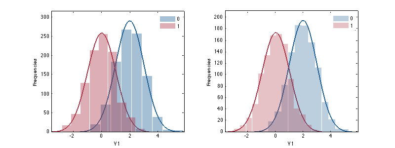 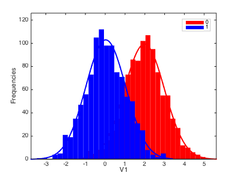
Now let us get back to the People data and set up some factors.
load people people.factor('Sex', {'Male', 'Female'}); people.factor('Region', {'A', 'B'});
Error bar plot for one variable is made in the same way, just use syntax and parameters as usual, but second argument should be a dataset with factors.
figure('Position', [0 0 800 300]) subplot(1, 2, 1) errorbar(people(:, 'Height'), people(:, {'Sex', 'Region'}), 'Type', 'std', 'Alpha', 0.1); subplot(1, 2, 2) errorbar(people(:, 'Height'), people(:, {'Sex', 'Region'}), 'Alpha', 0.1);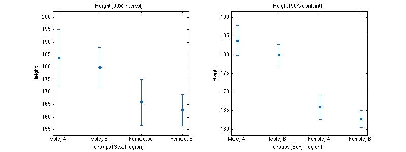
Box and whiskers plot.
figure('Position', [0 0 800 300]) subplot(1, 2, 1) boxplot(people(:, 'Height'), people(:, {'Sex', 'Region'}), 'Labels', 'names'); subplot(1, 2, 2) boxplot(people(:, 'Height'), people(:, {'Sex'}), 'Whisker', 1);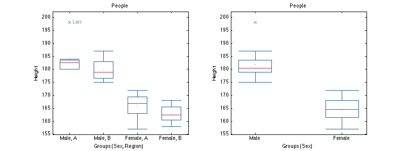
Quantile-Quantile normal plot.
figure('Position', [0 0 800 300]) subplot(1, 2, 1) qqplot(people(:, 'Height'), people(:, {'Sex', 'Region'}), 'Labels', 'names'); subplot(1, 2, 2) qqplot(people(:, 'Height'), people(:, {'Sex'}));

Conventional group plots
The basic conventional plots scatter(), plot() and bar() also can work with factors and groups. However in contrast to statistical plots here it was decided to use separate methods in order to extend their functionality. The methods for group plots have a leading 'g': gscatter(), gplot() and gbar(). One can think about group plots as following: if a plot needs a legend, it is a group plot.
The groups on these plots are separated first of all using different colors. Because of that color grouping is not available for group plots. Besides that one can change marker and line properties for each group. However in this case you need to specify as many values, as many groups you have. Let's look at some examples.
The bar plot is a specific one, the only possibility to make a group bar plot is to provide a dataset with several rows. While bar() makes separate plot for each row, the gbar() method will make a single plot with several bar series separated by colors as it is shown below.
% set up a data with explained variance for PCA model expvarcal = [0.54 0.25 0.13 0.09]; expvarcv = [0.49 0.19 0.15 0.12]; data = mdadata([expvarcal; expvarcv], {'Cal', 'CV'}, {'PC1', 'PC2', 'PC3', 'PC4'},... {'Results', 'Components'}, 'Explained variance'); % show group bar plot figure('Position', [0 0 400 300]) gbar(data);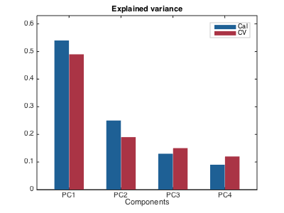
Parameters for the group plots are the same as for conventional analogues, but if one want to change color settings, separate color for each group has to be specified. Other properties (e.g. line style) can have one value (same for all groups) or also as many values as many groups. Here is how it works for bar plot.
figure('Position', [0 0 400 300]) gbar(data, 'FaceColor', 'yc', 'EdgeColor', 'rb', 'Labels', 'names');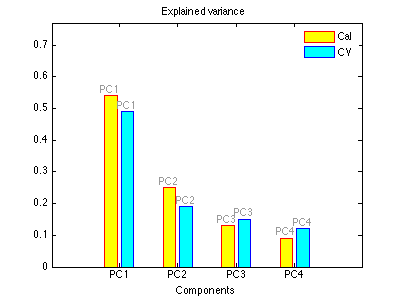
To make a group line plot there are two possibilities. First of all it can work the same way as the bar plot: every row is a group.
figure('Position', [0 0 400 300]) gplot(data, 'Marker', '.')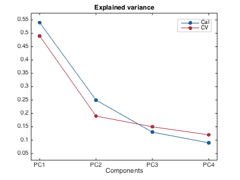
Alternatively one can provide a dataset with factors as a second argument for the plotting methods. In this case the rows of original data will be shown in groups.
data = people(:, {'Height', 'Weight', 'Wine', 'Beer'});
factors = people(:, {'Sex', 'Region'});
factors.factor('Sex', {'Male', 'Female'});
factors.factor('Region', {'A', 'B'});
figure('Position', [0 0 400 300])
gplot(data, factors)
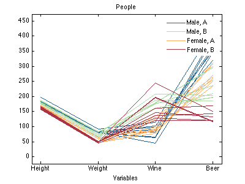 In group line plot, one can specify line and marker settings for each group separately or use one value for all. It should be noticed that since color in group plots is used for separation of the groups, it is not possibile to use parameter 'Colorby' and related.
figure('Position', [0 0 400 300]) gplot(data, factors, 'LineStyle', {'-', '--', ':', '-.'}, 'LineWidth', 2)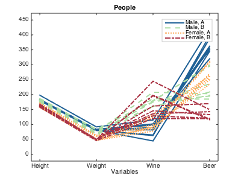
Group scatter plot works similar to the normal one. To introduce groups, you just need to specify a dataset with factors as a second argument.
figure('Position', [0 0 400 300]) gscatter(data(:, {'Wine', 'Beer'}), factors);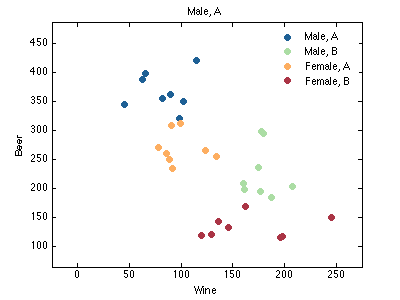
And similar to gplot() one can specify color and marker settings: either for each group or one for all of them.
figure('Position', [0 0 400 300]) gscatter(data, factors, 'Marker', 'ssoo', 'MarkerFaceColor', 'rbrb', 'Labels', 'names')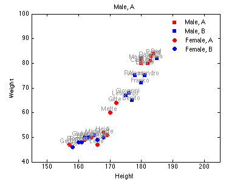